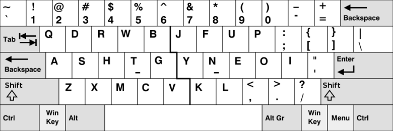

Workman is an alternative keyboard layout designed to reduce lateral finger movement and improve workload distribution across fingers. It shares some structural similarities with Colemak, particularly in its home row design, while aiming to minimize horizontal strain.
However, its changes to key positions can affect shortcut accessibility and require adaptation. Some analysis also suggest less efficient finger utilization compared to layouts like Colemak-DH, limiting its wider adoption.